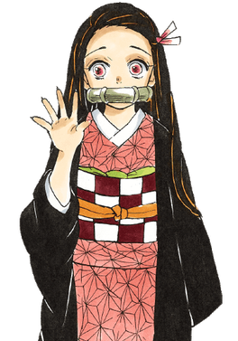

竈ㄗㄠˋ門禰豆子（かまど ねずこ Kamado Nezuko）
- 是吾峠呼世晴創作的日本漫畫《鬼滅之刃》中的女主角。由於禰豆子的家人遭到故事主要反派鬼舞辻無慘的殺害，自己被變成鬼，雖然是鬼但依然認得炭治郎是自己的哥哥，總是在最危險的時刻保護炭治郎，禰豆子後被鬼殺隊當家認可。因鱗瀧的暗示下把所有人類當作家人和必須保護的對象，是珠世和愈史郎過後第三個與鬼舞辻對立的鬼。除了改編動畫之外，禰豆子還出現在改編電子遊戲、輕小說和舞台劇中。
- 配音 : 鬼頭在試音演繹禰豆子時，被要求發出「像野獸般聲音」，正式選為禰豆子的聲優後，會有意識的去發出野獸的叫聲和呻吟，而演譯叼著竹枷說話的場景，鬼頭則是一邊咬著自己的手指一邊配音，為了發出這種聲音而做了各種嘗試。
- 設計 : 未變成鬼之前的禰豆子是個很賢淑的少女，身為家中長女，自小就被迫讓自己成長，替母親擔起照顧弟妹的責任，也認為炭治郎不要有著「貧窮就是不幸」的想法，和炭治郎一樣屬於性格溫和但生氣時很恐怖的類型，曾在小時候把一個欺負孩童的大人嚇得跪地求饒，讓大弟竹雄相當恐懼。
變成鬼的禰豆子雖然認得炭治郎，但並未取回身為人類時的自我，智能與行為舉止也都退化成幼兒狀態；對此，珠世認為在禰豆子心中，可能有比找回自我更加優先的事情。有將身體變大變小的能力。因為鬼懼怕陽光的體質，平時都躲在鱗瀧特製的木箱中讓炭治郎揹著到處走。最初只會使用基本拳腳攻擊，雙腿相當有力，踢飛過想殺害炭治郎的鬼。
- 劇中表現 :
本作女主角，竈門家的長女，炭治郎的大妹，竈門家被滅門後的唯一生還者，被鬼的始祖·鬼舞辻無慘攻擊時沾染到其血液而產生異變，變成「鬼」的模樣。因為身受重傷，在炭治郎要背她找大夫時，突然變得凶暴，並且對身為人類的炭治郎發動攻擊，後在炭治郎持續不斷的呼喚下恢復些許人性。雖然變成鬼但仍保有意識，知道炭治郎是自己的哥哥。
藉由睡眠代替食用人血肉恢復體力，也因此身體恢復能力與再生速度比一般的鬼還要緩慢，但在惡鬼化狀態下擁有與上弦不相上下甚至之上的恢復再生速度，能夠藉著血液凝結讓斷掉的肢體瞬間接回來。在怒氣過度爆發的情況下會變成大人的樣貌，口中的竹子掉落，化身為全身纏繞紫藤花紋路的惡鬼狀態。